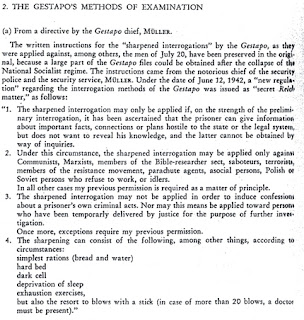

Thanks to the Bush Regime, the spirit of the Axis has triumphed: To paraphrase an eminently quotable line from a pretty decent film, We have become what we once beheld.
Treating someone with contemptuous condescension is surely one of the most effective ways to express hatred. Soothing insincerity rarely provides adequate cover for flagrant insults to the intelligence, especially when they are coupled with oblique references to the subject's presumed shortcomings.
Deploying insults of this variety requires a certain flair for the language. This is why we can be sure that George W. Bush's use of that tactic in justifying his veto of a legislation banning the use of torture followed a script composed by hireling wordsmiths paid to transmute Bush's primate grunts and snarls into something approximating refined English.
Before describing the specifics of this controversy, I must make it quite clear that the "War on Terrorism" is an entirely stage-managed exercise. Our nation does not confront an existential threat from abroad, in the form of "Islamo-fascism" or anything else -- apart from the prospect of foreclosure by the foreign regimes that own the paper on Washington's debts.
Our troops should not be in Iraq, Afghanistan, or any of the other foreign countries they occupy, and as illegal intruders they have no moral right to interrogate anybody for any reason. Yes, I understand the security challenges confronted by troops as they deal with indigenous populations who don't overflow with gratitude for the occupation.* But the best way to provide for the security of our troops in Iraq would be to get them the hell out of that country immediately, and the same can be said of Afghanistan.
If this seems a trifle harsh, remember: Unctuous flattery may flow freely from someone who hates you, but a genuine friend may sometimes express his affection by sternly speaking of your shortcomings.
That being said, it must be acknowledged also that the military's interrogation standards are much higher than those of the Bush-era CIA and the spooked-up "contractors" who have been given free rein by Bush and Cheney over the past six years.
Granted, this hasn't always been the case: During the sanguinary "liberation" of the Philippines a century ago -- a "humanitarian" occupation that eerily prefigured the current missions in Iraq and elsewhere -- water torture was widely used by military personnel, and just as widely defended here at home. But in recent years, the military has taken commendable steps away from the efforts of the Bushian Reich to legitimize torture.
Perhaps torture is only evil when the Enemy does it.

No, the military isn't pure. But for the most part it has been the "Intelligence Community" -- or, more specifically, a select element within that cohort -- that has worked to institutionalize torture, both the variety carried out directly by American operatives and the even more gruesome trade plied by the foreign intelligences services used as sub-contractors for Washington.
"Were it not for this program," lied Bush with reference to his Regime's torture apparatus, "our intelligence community believes that al-Qaida and its allies would have succeeded in launching another attack against the American homeland.... I cannot sign into law a bill that would prevent me, and future presidents, from authorizing the CIA to conduct a separate, lawful intelligence program, and from taking all lawful actions necessary to protect Americans from attack."
By this, the Simian-in-Chief means a program "separate" from the interrogation methods approved for use by military interrogators, and "lawful" in the sense that the CIA's torture program has received the imprimatur of the president, in whom dwells the fullness of the law.
Regarding these triumphs of preventive counter-terrorism, we have only the word of a Regime run by people who have never told us the truth about anything. Contradicting the claim that torture is a reliable means of gathering valid intelligence are centuries of relevant experience and the views of people with relevant experience in the field of interrogation.
Scores of retired admirals and generals opposed Bush's veto, as did nearly a score of "national security experts" (regarding the contribution of the last group, my reaction is: Preserving the ban is a good idea anyway).
Military opposition to torture reflects the influence of an honorable enemy whose methods made him the most effective interrogator of World War II: Hanns-Joachim Scharff, the German Luftwaffe's "master interrogator."
Scharff, who held an unprepossessing rank akin to that of lance corporal, was slated for deployment to the Russian Front when he was conscripted in 1943. His wife -- obviously not someone easily intimidated -- barged into the office of her husband's would-be commanding officer to excoriate the German military for wasting the life of a well-educated man who spoke perfect English.

The general agreed that this would be a poor use of Scharff's gifts, and in short order Hans found himself assigned to the Dulag Luft, a prison camp holding many American and Allied POWs.
There were some German interrogators who beat and otherwise abused POWs (although the Germans were rarely, if ever, anywhere near as brutal as the Japanese in this respect). Scharff never did -- and his results were extraordinary. Rather than using the practice or threat of duress to compel a prisoner to talk, Scharff simply got them talking, and used his wits and powers of observation to extract morsels of vital information from them. In due time, those morsels would aggregate into a feast.
"My dad used to go on a lot of walks with [the POWs]," recalls Chris Scharff. "Close by [Dulag Luft] was a zoo owned by car manufacturer Adam Opel. They had moose and deer. `Would you like to feed a moose today?' he'd ask a person. He found a way to break into one of Opel's cellars and tasted the wine there. So they'd be sitting there drinking wine and he'd say, `So tell me about the bursts of red or white,' and the unsuspecting guy would say, `Oh, that means we've run out of ammunition.'"
Former US Army interrogator Torin Nelson, a professional intelligence officer and (therefore) an Abu Ghraib whistle-blower, "worships at the altar" of Scharff,"a German corporal whose highly effective methods of extracting information from captured Allied pilots in World War II included such techniques as having protracted philosophical conversations with his subjects while strolling through the woods," observes Government Executive magazine.
"He'd get little bits of information each day, so small the prisoners didn't even realize what they'd given up," Nelson points out.
Former Army interrogator David Swanner, who taught interrogation techniques at the US Army Intelligence Center and School at Arizona's Ft. Huachuca, points out that the course on interrogation taught there "was ... based on the techniques that Hanns Scharff developed.... All that seems to have gone out the window in favor of torture now."
However, the model for interrogation today is not the real-life successes achieved by Hanns Scharff -- who went on to become a naturalized US citizen and, as a mosaic artist, helped create some of the attractions at Disney World -- but the fictional exploits of 24's Jack Bauer, a television character who stirs the loins of squishy nationalist herd-poisoners like Rush Limbaugh and Joe Farah.
Yes, Scharff worked for a murderous regime. But in his efforts to question Allied pilots and bomber crews, he was working to defeat a foreign coalition that was actually laying siege to his homeland. Because of Hitler's demented war, Germany actually faced the prospect of annihilation. Allied air attacks were devastating and utterly terrifying. Yet Scharff, in dealing with those who were attacking his country, never needed to resort to mistreatment in order to extract information from captives.
Using skills that would later shape his career as a mosaic artist, Scharff teased critical intelligence from POWs through the application of his wits and careful detective work. One former prisoner told Scharrf's biographer that the Luftwaffe corporal "could probably get a confession of infidelity from a nun" -- a valid one, that is, not one desperately offered in the hope of avoiding or ending torture.
The key to Scharrf's success, notes a recent profile, "was that in most cases, the POWs being interrogated never realized their words—many times seemingly insignificant small talk—were being reconstructed by Scharff for Germany’s benefit. It’s a measure of Scharff’s reputation that after the war, he was not prosecuted for war crimes. Instead, the Pentagon invited him on a postwar lecture tour. Scharff told his military audiences that camaraderie, fair treatment and respect are the indispensable keys to extracting information from the enemy."
While Scharff was using those methods with great success, it was the Gestapo that employed the methods both they and the Bush Regime call "enhanced interrogation" techniques -- thereby earning many of their interrogators places at war crimes tribunals (as was the case with their even more brutal counterparts working on behalf of Imperial Japan).


A translation of an official Gestapo memo outlining that Regime's version of Bush-style "enhanced interrogation" methods. (Courtesy of Andrew Sullivan.)
It is a sobering illustration of what we have permitted ourselves to become that the Bush Regime denigrates as inadequate the methods successfully employed by Hans-Joachim Scharrf, an honorable soldier fighting for a thoroughly dishonorable government, and embraces those employed by war criminals who served in history's most notorious secret police organization.
The injury done to our nation by Bush's torture policy is immense. But the insult resides in his mock-pious insistence that our country would be defenseless if we didn't emulate the Gestapo. That's the kind of thing that could only be said by someone who truly hates our country, and genuine patriots should feel free to reciprocate that hatred in kind.
______
*The subject of how American troops have worked to engender the trust and gratitude of Iraqis is dealt with in this installment's "Video Extra" (caveat lector: this video contains exceptionally foul language; severe, gratuitous cruelty to civilians; inexcusable cruelty to innocent children; and lethal cruelty to helpless animals):
Doubtless some of these heroic troops are destined for post-war careers as police officers.
One other thing: My enthusiasm for The Untouchables (alluded to in the first caption above) shouldn't be taken as an endorsement of Prohibition (of any kind), or the execrable ATF, of which the real-life Elliot Ness was the founder. It was a good film, however tainted its real-life inspiration. (And how about this for irony: Ness ended his days working as Chairman of the Board for Diebold -- at the time, a manufacturer of locks and safes, and now the corporation charge of rigging elections for the Regime.)
 Available for sale now.
Available for sale now.Dum spiro, pugno!
20 comments:
The award for best documentary this year was given to "taxi cab to the dark side." It' available in segments on google videos. Hopefully this means that people will become more aware of what is going on with u.s. government torture.
You don't know what you're saying, Grigg!! Just look how quickly our new "enhanced" interrogation methods have gotten us the intelligence to capture and put on trial Osama bin Ladin!!
The neo-feudal corporate pimps who wish to make us all serfs think shrubya is great. And if anyone thinks the next corporate figurehead to occupy the white house is going to scale back the imperial executive I have a nice bridge in Brooklyn for sale.
As a courtesy, this serves as a trackback, as I mention your post in my own today. Forgive me if putting you in the same league as Fred Reed is distasteful.
Broken -- why would I be offended, rather than honored, to find myself in the company as the estimable and accomplished Mr. Reed? He is one of the most insightful, and usefully incite-ful, writers in the blogosphere. Thanks!
The reason for the disdain shown honorable individuals such as Hans-Joachim Scharff and their humane and effective methods of gathering information becomes apparent when one realizes that information gathering is not the real purpose of interrogation as practiced by the world's regimes (and their various military and police appendages) today. Rather, the sole overriding purpose of Abu Ghraib-style exercises in pain and degradation is to instill fear of and compliance with the will of the State in the hearts of the populace at large. While this may be effective in the short term, such violence-induced fear and loathing inevitably lead to resentment and acts of revenge by the victims and their families, with deadly results for the practitioners of sadism. This is being played out right now in the twin quagmires of Iraq and Afghanistan and will eventually play out here at home in the future when such torture becomes routine against dissident Amerikan citizens.
A friend in South America said that Bush's veto of legislation which would have prohibited waterboarding is getting big news play there.
Why? Because in the 1970s, Chile, Argentina, Uruguay and Brazil had military regimes which engaged in torture. This happened within living memory, and some of the perpetrators are still being prosecuted.
In a stunning turnaround, these now-democratic nations represent beacons of freedom and human rights, while the United States has descended into the benighted third-world status of a consistent human right abuser.
It indeed takes true hatred for George W. Bush to vandalize his country this way. He belongs in a jail cell in Brattleboro, Vermont, like any antisocial hooligan.
Yeah and probably the only city w/ guts enough to put those creeps into prison would be Brattleboro... and maybe Burlington. Vermont - the one beacon of sanity left in these united feudal states of America.
I remember Ft. Huachuca, southeast of Tucson. I was TDY at Davis-Monthan in the latter 80s for two months of the field-training side of GLCM school and Huachuca is where we went on our 10-day dispersal outing. Nice country in those parts.
I agree that Herr Scharff was an honorable man by any measure. However, unlike the America of the 1940s, I seriously doubt that a man who acted in the same honorable manner in today's America would be so admired, rewarded, promoted, or even retained by those who mattered.
It's not only the Bush Regime, itself, that's despicable it's the culture itself that's become coarsened since the 1940s as that Youtube video of young Ami Soldaten so plainly illustrates. And, as you said, they'll be ripe for police work after their military service (ever) ends.
Naturally, war, especially for dubious and/or illicit reasons, only coarsens even more the already coarse and rudderless youngsters who naively enter such a meat grinder. This all would likely mean there'd be problems in the best of times when they return to civilian life and its ever more decadent culture, but with the added burden of the economy tanking, this all could portend bad omens for society at large.
Once again, some very astute observations. Sometimes I quite literally grieve for what we, as a nation, have become. Though it often seems so hopeless, someone such as yourself is at least willing to step forth and say the emperor has no clothes publicly. [and I very much enjoyed your debate at my alma mater, C of I, in December and felt quite privileged to shake your hand afterward]
We amerikkkans have become a spoiled selfish people who are subservient to a government that demands what it wants now - don't think about it, don't question, don't complain, just comply. A nation ruled by arrogant, abusive, discriminatory life forms swimming in the shallow end of the intelligence pool. But for many, as long as the ox getting gored isn't our own we cheer them on.
And, unfortunately it is not only our dealings with foreign nationals in our war of aggression, but in the way the gov't treats all of us as well.
Anyone who has had to deal with gov't bureaucracy at any level knows that the objective is compliance - not justice, not right vs. wrong, and not fairness. Compliance and it better be the answer 'they' want or else at all levels.
Can such a society survive? I think not. Let it end quickly so that those left might gather themselves up to once again seek the dream of life, liberty and the pursuit of happiness. The way we exist today as a nation and a people is no longer salvageable nor are we deserving of salvation.
If I have to sit through another Sunday church service where they pray for our troops and the President I think I will vomit. The Bible exhorts us to pray for our leaders - it doesn't tell us what to pray. In light of this I have begun to pray that the Lord confounds and render futile the workings of "mad" men - in particular those who are evil and in positions of leadership in this country. How refreshing if we would hear that prayed from the pulpit along with the prayer that our troops will lose badly and have to come home.
I hope the soldier who threw the puppy to its death loses his legs to an IED.
That kind of sociopathic behavior is inexcusable.
"Yes, Scharff worked for a murderous regime."
Yes, he did, but that regime was just a bit more murderous than the one responsible for 'Operation Keelhaul'. Wouldn't you agree Dwight? Oh, wait. You can't answer that 'cause you're too busy burning in Hell. Sorry, my bad.
The United State of America needs to be broken up into smaller regions. This globalist, imperialist behemouth in all its insipid hubris must die. It simply cannot sustain itself too much longer with all of these financial obligations and military excursions it has saddled upon itself, juxtaposed by an American sensate culture comprised of a superficial and sedated people who largely possess no inkling of republican principles, and who are equally dispossessed of any fortitude to do anything about it. Something's got to give.....and soon.
O' Wow! I discovered like-minded dissidents on this blog site! Finally, I've found my home. To my brothers and sisters of freedom, we breathe, so let us fight! Can you give me an Amen! (We're with good company, for Jesus, my great God and Saviour, was a dissident too!)
If I have to sit through another Sunday church service where they pray for our troops and the President I think I will vomit.
Alas, welcome to the club of those of us who've made the painful discovery that almost ALL "evangelical" churches throughout most of the nation have been co-opted by the regime. Unless you are content to settle for membership in one of the more "mainstreamed" (i.e., socially liberal) denominations such as Methodist, Episcopal, or Presbyterian or revert to Roman Catholicism, you can pretty well forget about finding a formalized congregation that isn't in reality the Church of Neoconservative Statism. Sadly, even the Catholic Church, once not only a bastion of independent moral leadership and example, but a major guiding influence on the behavior of secular institutions, has been neutered by the twin tide of political correctness and the influence of "the great 'national' religion" that saps the power out of any faith that becomes too independent of the collectivist national mindset.
Best recommendation: Seek out fellow believers who, like you, believe in liberty, love, and respect for their fellow man and who worship the Living Christ rather than secular politicians who profess a faux belief in Him. You may be a small and intimate group that meets in someone's living room ("wherever two or more gather in my name..."), but you can be assured that your faith will only be strengthened.
To Liberranter,
Right on! There does exist a few independent clerics who will not bend the knee to Baal. One is my pastor (Pastor P. Fernandes, a conservative theologian and constitutionalist based in Washington) who is quite abhorred and disgusted with the criminal Bush administration and the prevailing neocon, statist mindset that has infected the thinking -or lack thereof- of too many of my fellow Evangelical Christians. This probably explains why his church membership never seems to exceed 200. Across the Puget Sound in Microsoft country, however, you'll find a theological kindergarten also known as the Overlake Christian Church, a Bush-genuflecting megachurch with a congregation in excess of 5,000 "worshippers".
I too despaired of finding Christians obedient to the Holy Spirit. For years I made it a point to not attend church when "holidays" like Memorial Day, Veterans Day, Mother's Day, Father's Day, were celebrated. I have stopped going to church because of all the pro-war propaganda, directly against Scripture. Yet when I try to point this out, I am sternly reprimanded, accused of being not merely unpatriotic, but UNCHRISTIAN!
I am content to abide with the Word of God. And now overjoyed that there ARE others of you "out there"!
2 Chronicles 20; ever heard it read, preached on, taught on? Yeah, me neither. Rev. 19. Only ONE has a weapon, and it doesn't say Semper Fi.
Torture is as stated is not an effective means of gathering information any military man worth his salt knows this. torture is meant to belittle, to intimidate to literally make the victim feel like worthless animal making them submit to the empire and even worse to feed sadistic appetites of the torturers this part happened a lot during days of slavery.
In france the code noir forbade torture to slaves it allowed beatings and only if disobedient sadly slaves then didn't have to disobey to get tortured slave masters often did it for no reason other than to feed there appetite for sadism the law forbade it but none ever followed it.
Mr Hans Scharff truly an honorable and intelligent man he discovered that respect and honor work a lot better than threats and pain.
Sadly US has shunned the brilliant work of this man in favor of baser instincts and methods.
truly sad. As for Bush the foolish and idiotic saying without torture US would be defenseless i face palm at such idiocy. then again when guy who can't even run companies right gets elected to run a country this is what to expect
Post a Comment